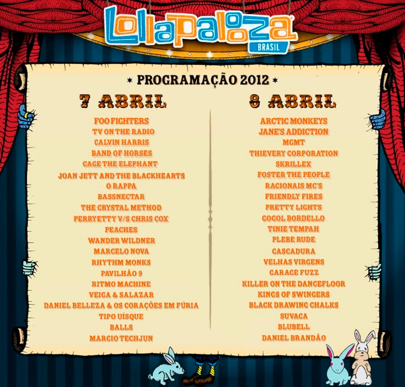
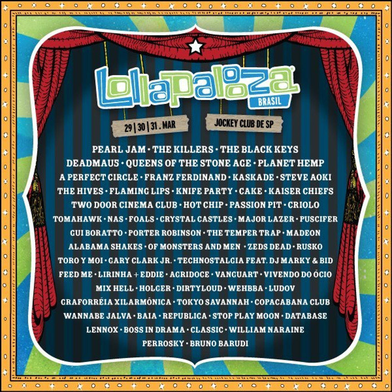
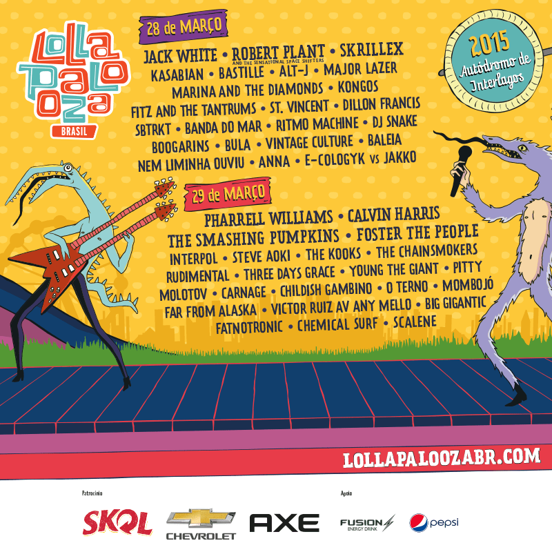
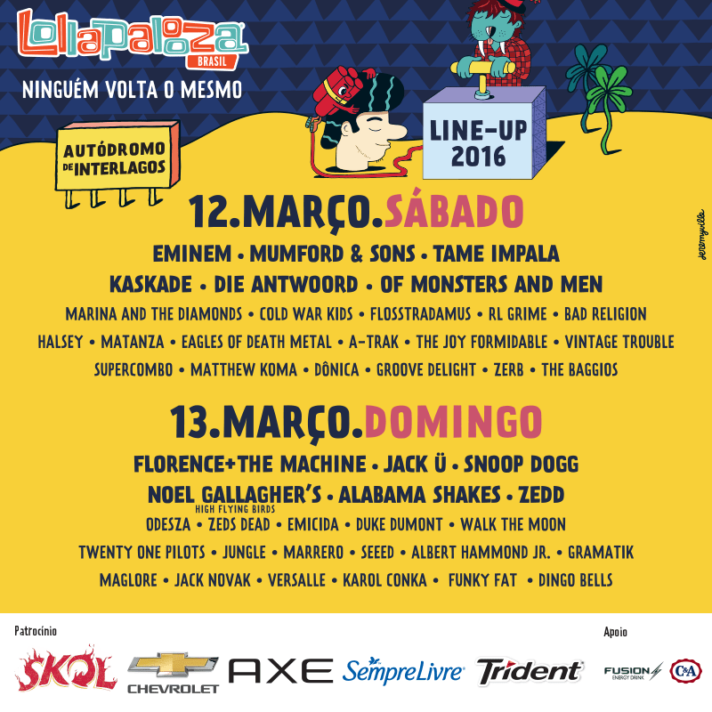
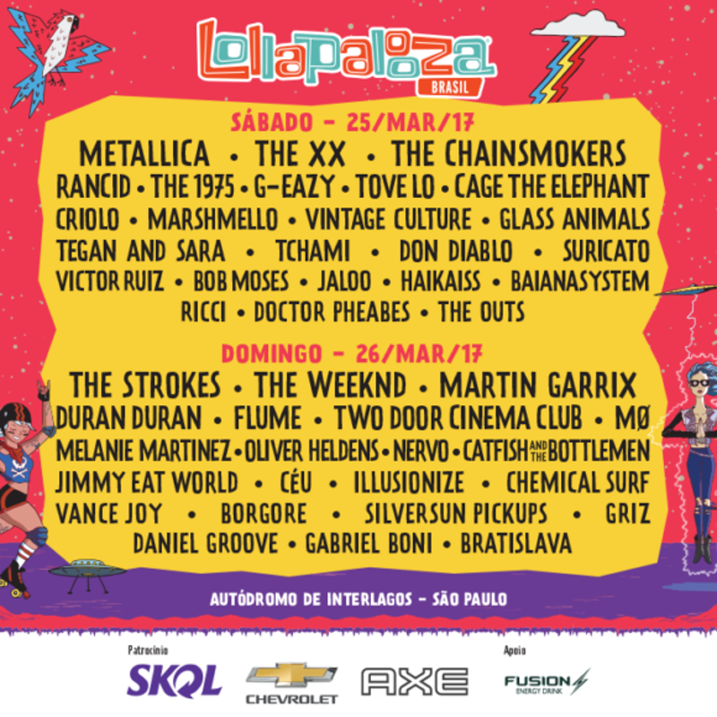

A 1ª edição do festival rolou em 2012, no Jockey Club em São Paulo. Nos dois dias, 07 e 08 de abril, 70 atrações se apresentaram nos cinco palcos (Cidade Jardim, Butantã, Kidzapalooza, Alternativo e Perry), com Foo Fighters e Arctic Monkeys como headliners:
Na inauguração da história do Lollapalooza Brasil, o público saiu surpreendido, principalmente com o primeiro dia que foi marcado por um sol escaldante e terminou com um show inesquecível de mais de 2h30 do Foo Fighters. Melhorou ainda mais no domingo, mesmo com a chuva que marcou o show de encerramento com Arctic Monkeys. Outros shows também muito comentados foram do Friendly Fires e Foster the People, que empolgaram o público no segundo dia.
Depois do sucesso da primeira edição nacional, o festival veio maior em 2013 – em três dias, 29, 30 e 31 de março – e com os mesmos cinco palcos. The Killers, The Black Keys e Pearl Jam foram os grandes nomes do palco principal:
Esse ano ficou marcado por chuva e muita lama no Jockey, fatores que não atrapalharam quem foi curtir os dias de festival! Entre os shows, Of Monsters and Man se destacou e foi eleito uma das melhores surpresas do festival, enquanto The Killers, The Back Keys e Pearl Jam cumpriram as expectativas de fazer os shows mais esperados dos dias.
O terceiro ano de Lollapalooza contou com uma grande mudança, saindo do Jockey e indo para o Autódromo de Interlagos. Neste ano, o festival voltou a acontecer em dois dias, com Muse e Arcade Fire como headliners:
No seu primeiro ano no Autódromo, o Lollapalooza ficou marcado por grandes shows e alguns problemas logísticos. No segundo dia os problemas foram resolvidos e o público pôde circular mais tranquilamente. Nesse ano foi a inauguração do Chef Stage, uma área que contou com 16 stands de comidas diferentes, e opções de mais de 30 pratos de massas, paellas, risotos entre outros, e também o ano que o festival o começou a ser comandado pela T4F. No primeiro dia, a grande surpresa foi o show da banda Imagine Dragons. Já no segundo, foi a banda Arcade Fire quem se destacou, com um show inesquecível para fechar o evento.
Em 2015 o Lolla aconteceu novamente em Interlagos, nos dias 28 e 29 de março. Jack White e Pharrel Williams foram os responsáveis por ser os headliners do festival:
Este foi um ano de mais uma mudança importante para a história do Lollapalooza Brasil. A moeda mudou de “Pillapalooza”, fichas em papel que só podiam ser compradas dentro do evento para "Lolla Mangos". 2015 também se mostrou muito mais organizado do que o ano anterior, com menos filas e mais comodidade, como um aumento no Chefs Stage, com mais opções de alimentação. No quesito musical, o primeiro dia foi marcado pela dobradinha Jack White e Robert Plant. A maior surpresa foi a quantidade de pessoas ansiosas para ver as atrações eletrônicas, Skrillex e Calvin Harris.
Em 2016, no Brasil, Lollapalooza aconteceu nos dias 12 e 13 de março, com Eminem e Florence+The Machine como headliners:
Em sua 5ª edição no Brasil, o festival provou-se mais do que consolidado com sua boa organização. Novidades nas ativações de marca deixaram experiências diferenciadas para quem foi curtir os shows, como uma torre de saltos da Axe (com três alturas, 8, 11 e 14 metros), para que os participassem pulassem em queda livre para um grande colchão inflável.
A banda Mumford & Sons roubou a cena do primeiro dia com um show enérgico e uma platéia que cantava juntos todos os hits, e Eminem, responsável pelo fechamento do festival. O segundo dia também mostrou a alta do estilo EDM neste ano, com um show cheio de fogos, papéis picados.
Na edição de 2017 o festival rolou nos dias 25 e 26 março, com Metallica e The Strokes como headliners:
A novidade do ano é que o ingresso do Lollapalooza foi em forma de pulseira, a Axe Lolla Cashless. A pulseirinha, que é tão utilizada fora do país, veio para trazer ainda mais conveniência para o festival. Além de substituir o ingresso, ela também evitou a utilização de dinheiro para compras dentro do evento.
O palco eletrônico mostrou o tamanho da sua importância quando ficou lotado para o show do Vintage Culture e se manteve em alta durante a maioria das apresentações do festival. Mais uma vez o palco Onix trouxe shows que ficaram para a história: The XX fez um show que hipnotizou o público e The Weeknd colocou todo mundo para cantar seus hits. The Strokes e Metallica também mostraram o porquê de serem os headliners do festival com shows empolgantes.